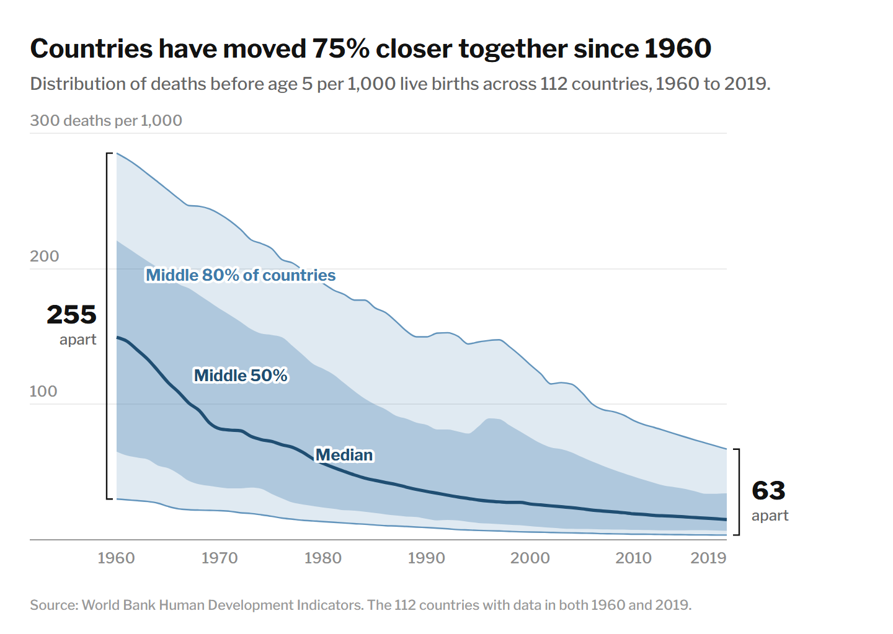
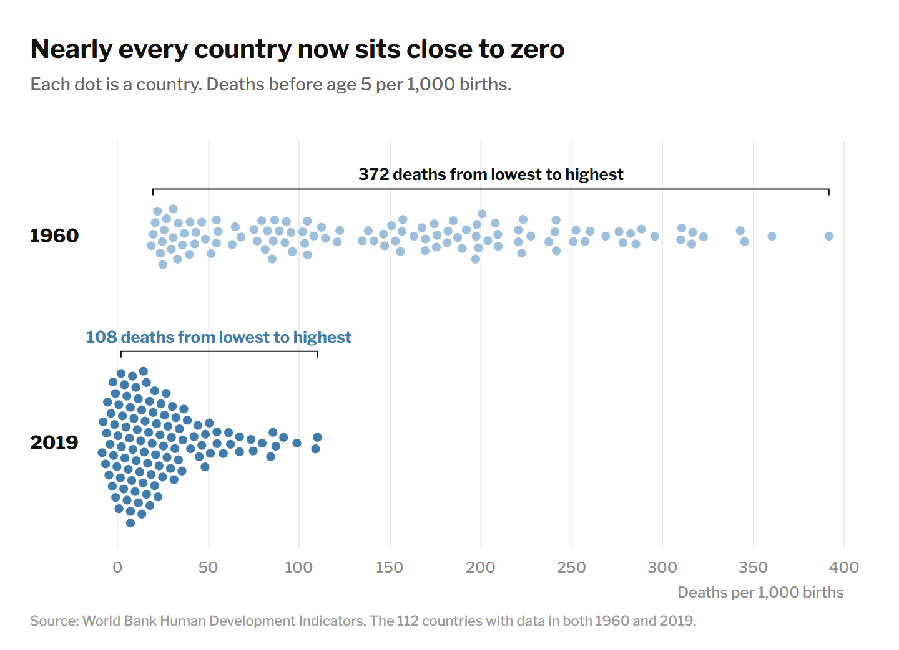
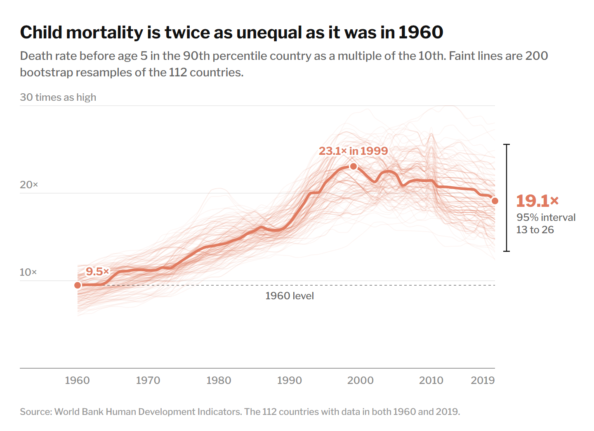
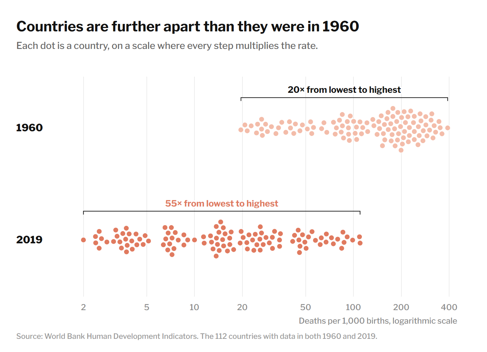

Convergence or divergence? Two readings of child mortality across countries, 1960 to 2019
Proposition Under-five mortality rates are converging across countries.
Using the World Bank’s under-five mortality series for the 112 countries with data in 1960 and 2019, we test whether countries have moved closer together. Every country improved, and the median rate fell from 149.4 to 15.0 deaths per 1,000 live births. Measured as a difference, the distance between the 90th and 10th percentile countries fell by 75%. Measured as a ratio, it doubled, from 9.5 to 19.1. We present two visualizations for the proposition, two against it, and an interactive figure that animates both measures from 1960 to 2019.
1Visualizations for the proposition
Both visualizations for the proposition measure distance between countries in deaths per 1,000 live births. Figure 1 shows how the whole distribution of country rates narrowed over time. Figure 2 shows every country in the first and last years.
1.1Figure 1: Percentile fan

Each decision is scored from −2 (fully deceptive) to +2 (fully earnest).
-
Summarize the distribution with percentiles of a fixed sample
The fan shows the 10th, 25th, 50th, 75th and 90th percentiles of the 112 countries observed in both 1960 and 2019. A fixed sample keeps changes in coverage from producing a trend, and percentiles limit the influence of outliers. Together they also remove the countries with the slowest progress. The 81 excluded countries include Nigeria, Niger, Chad and Somalia, and within the sample the Central African Republic (110.1) and Sierra Leone (109.2) lie well above the 2019 upper edge of 66.9.
-
Plot rates on a linear scale
When every country improves at a similar percentage rate, absolute differences shrink, so on a linear scale the fan narrows almost automatically. The scale is the default and is unlikely to be read as a choice. On a logarithmic scale the bands would keep roughly the same width.
-
Report “closer” without naming the measure
The title states that countries moved 75% closer, which is the reduction in the absolute difference between the 90th and 10th percentiles, from 255 to 63 deaths per 1,000 births. Measured as a ratio, the same two percentiles moved further apart. Readers are likely to take the title as a general statement about inequality in child survival.
1.2Figure 2: Every country, linear scale

Each decision is scored from −2 (fully deceptive) to +2 (fully earnest).
-
Use a linear axis that compresses low rates
In 2019, 73 of the 112 countries had rates below 25 and 41 had rates below 10. On a linear axis running to 400, those countries collapse into one dense cluster, so a country at 2 and a country at 20, a tenfold difference, look almost identical. The compression is what makes 2019 appear uniform.
-
Compare only the first and last years
Two rows are easy to read and invite a before and after comparison. Showing only 1960 and 2019 omits the intervening decades, including the period around 2010 when the relative distance between the lowest and highest countries was largest. The years are standard endpoints, but the choice removes any sign that the trend was uneven.
-
Show every country without trimming
Each of the 112 countries appears as a dot in both years, with no percentile trimming and no omitted outliers. The countries with the highest 2019 rates are visible at the right of the cluster, and the bracket reports the full range. The chart persuades through scale rather than selection.
2Visualizations against the proposition
Both visualizations against the proposition measure distance between countries in proportional terms. Figure 3 divides the 90th percentile by the 10th, using the same countries as Figure 1. Figure 4 shows the same dots as Figure 2 on a logarithmic scale.
2.1Figure 3: Percentile ratio with bootstrap

Each decision is scored from −2 (fully deceptive) to +2 (fully earnest).
-
Measure dispersion as a ratio and call it inequality
The ratio of the 90th to the 10th percentile is a standard measure of relative inequality, but it is sensitive to its denominator. The 10th percentile fell from 30.1 to 3.5, so small absolute changes at the low end move the ratio substantially. The title presents this one measure as the state of inequality in child mortality.
-
Compare 2019 with 1960
The ratio rose from 9.5 in 1960 to a peak of 23.1 in 1999 and fell to 19.1 by 2019. The peak is labeled, but the title and the dashed reference line compare 2019 with 1960, the lowest value in the series. Measured from 1999, the ratio declined by 17%.
-
Show sampling uncertainty with a bootstrap
We resampled the 112 countries 2,000 times and drew 200 of the resampled ratio series behind the main line. The 95% interval is 6.7 to 11.6 in 1960 and 13.4 to 25.6 in 2019, so the increase is not an artifact of which countries happen to be in the sample. Disclosing uncertainty is earnest. It also gives the chart an appearance of statistical rigor that most readers cannot evaluate, and the interval says nothing about the choice of measure, which is where the chart is most open to question.
2.2Figure 4: Every country, logarithmic scale

Each decision is scored from −2 (fully deceptive) to +2 (fully earnest).
-
Use a logarithmic axis
Logarithmic scales are standard for mortality rates because equal distances represent equal proportional differences, and the scale is stated in the subtitle and on the axis. Most readers nevertheless read horizontal distance as an absolute difference, so the 2019 row appears wider than the 1960 row even though every country in it has a lower rate.
-
Measure the range from the single lowest to the single highest country
The brackets compare the most extreme country at each end: Sweden (19.6) and Sierra Leone (391.7) in 1960, and Iceland (2.0) and the Central African Republic (110.1) in 2019. The 2019 multiple of 55 depends heavily on one country with a rate of 2.0. Using the 10th and 90th percentiles of the same countries gives 19.1.
-
Draw 2019 in a saturated color and 1960 in a pale one
The saturated coral draws attention to the 2019 row and its wider range, while the pale 1960 row recedes. The color difference implies that 2019 is the more troubling year, which the data do not support for any individual country.
3Both measures, year by year
Figure 5 animates the full distribution of the 112 countries from 1960 to 2019. The two readouts track the measures behind our two sides as the years advance: the difference between the 90th and 10th percentile countries falls almost every year, while the ratio between them rises until 1999. Press play, drag the slider to any year, switch between linear and logarithmic scales, or hover over a dot to see the country.
| Measure | 1960 | 2019 | Change |
|---|---|---|---|
| 90th percentile, deaths per 1,000 | 285.3 | 66.9 | −77% |
| 10th percentile, deaths per 1,000 | 30.1 | 3.5 | −88% |
| 90th minus 10th percentile | 255.2 | 63.4 | −75% |
| 90th divided by 10th percentile | 9.5× | 19.1× | +102% |
| Highest minus lowest country | 372.1 | 108.1 | −71% |
| Highest divided by lowest country | 20.0× | 55.0× | +175% |
Scores for the twelve design decisions
From −2 (deceptive) to +2 (earnest)
4Reflection
At the checkpoint, our group favored the visualizations supporting the proposition, on the grounds that convergence is usually understood in absolute terms and that the ratio is unstable when the lower percentile approaches zero. Producing the final set changed our view of which argument was harder to construct. When every country improves, most default choices, including a linear scale and a fixed sample, produce the appearance of convergence. The argument against required more deliberate choices, and the most striking result of the project was that Figures 2 and 4 make opposite arguments from identical values, differing only in the axis and the color. Kennedy et al. argue that conventions such as clean axes and cited sources give visualizations an appearance of objectivity. A logarithmic scale carries that authority, and it was the single most effective choice on the side against the proposition.
We define ethical analysis and visualization as the practice of making choices that could be defended to a reader who has seen the alternatives. Three questions were useful in applying this definition. The first is whether the choice would have been made if it favored the other side. The fixed sample meets this standard, and the 1960 baseline for the ratio does not. The second is whether the choice is disclosed where readers look. The logarithmic scale is labeled in the subtitle and on the axis, yet most readers will still read horizontal distance as an absolute difference, so disclosure alone is not sufficient. The third is whether the visualization encourages a belief the data do not support. Describing the ratio as inequality in child mortality does so, because the probability of survival converged. Kong et al. found that slanted titles affect what readers recall even when the chart is neutral, and in our work the titles carried much of the persuasion.
Our own reading of the data is that child mortality converged in absolute terms and in the probability of survival, while relative dispersion increased until about 1999 and has declined modestly since. Each visualization misleads chiefly by omitting the other measure. None of the techniques we used is unusual in published graphics, which leads us to conclude that persuasion and deception cannot be separated by a list of prohibited techniques. The distinction depends on whether the combination of choices leaves readers with a conclusion they would revise after seeing both measures, which Figure 5 lets readers do for themselves.
5Data and methods
Data are from the World Bank’s Human Development Indicators, 1960 to 2020, in the cleaned copy linked
from the assignment (light-and-salt/World-Bank-Data-by-Indicators,
aid-effectiveness.csv and its country metadata). The indicator is the under-five mortality
rate, deaths before age 5 per 1,000 live births. It is a rate and not a count of deaths. Regional and
income aggregates are excluded.
The sample consists of the 112 countries with a value in both 1960 and 2019. Annual 10th and 90th percentiles are computed by the nearest rank method, and every country is weighted equally. These definitions follow our checkpoint (vsinha99/dsc106-project2). Figures were drawn with D3, and the dot positions in Figures 2, 4 and 5 come from a collision layout that keeps each country at its exact value on the horizontal axis. Code is available at nahatav/dsc106-project2.
References: Kennedy, H., Hill, R. L., Aiello, G. and Allen, W. (2016). The work that visualisation conventions do. Information, Communication & Society. Kong, H.-K., Liu, Z. and Karahalios, K. (2018). Frames and slants in titles of visualizations on controversial topics. Proceedings of CHI 2018.